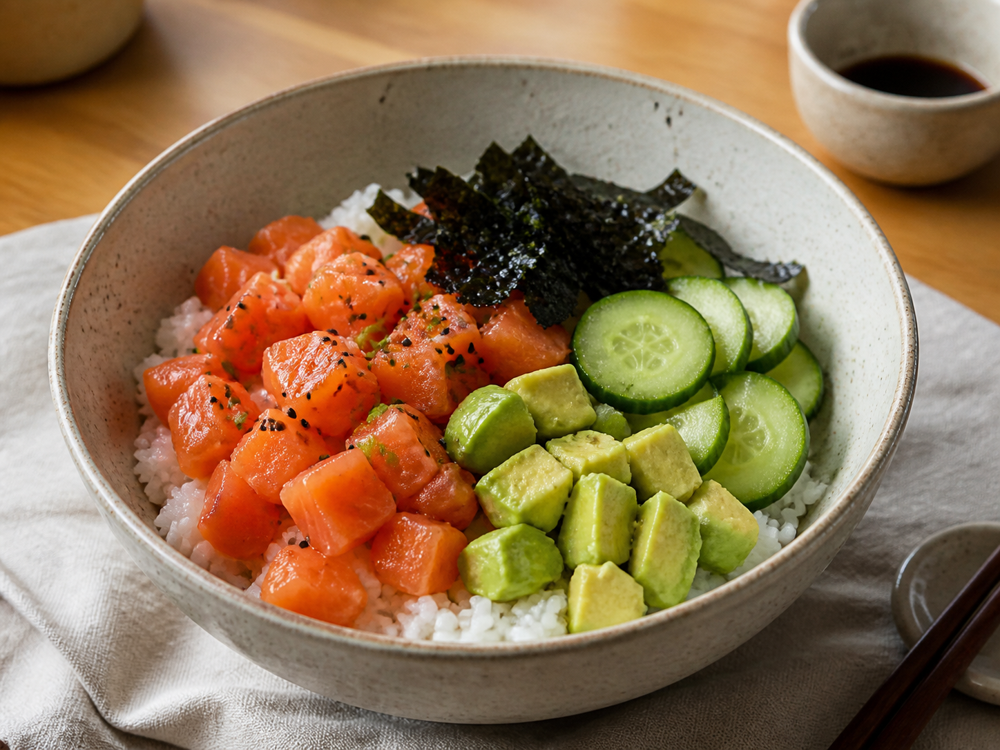

← All recipes
Japanese · Easy
Salmon Sushi Bowl
All the fresh flavours of sushi with none of the rolling.

Let’s cook
Step by step
Use salmon sold as safe for raw eating, or cook it fully in a pan for 5 minutes.
Mix soy sauce and sesame oil; coat the salmon.
Stir rice vinegar through warm rice and divide between bowls.
Arrange salmon, cucumber, and avocado on top.
Finish with nori and any remaining sauce.
Read this firstIdiot-proof tip
If the fish label does not clearly say it is suitable for raw consumption, cook it.